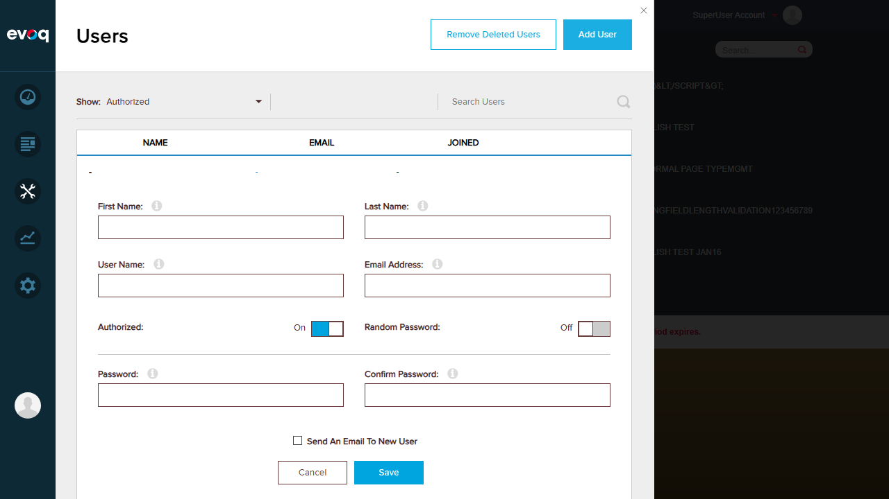
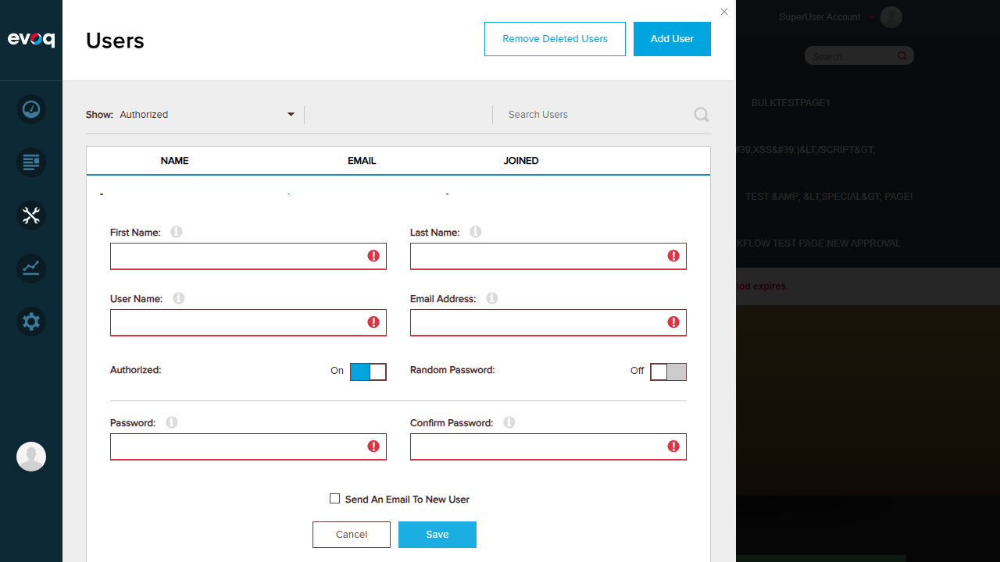
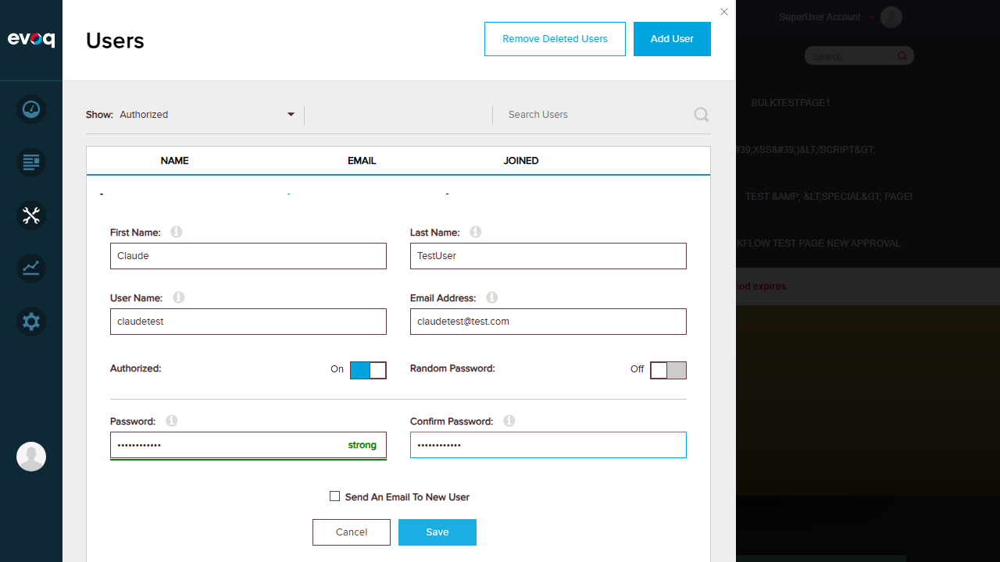
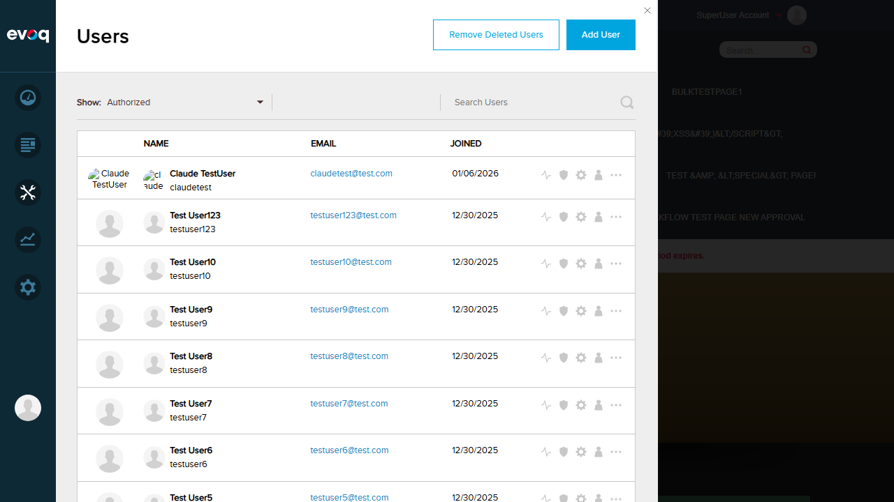

Objective: Verify that the create user form opens when clicking the "Add User" button
Steps Taken:
Logged in as SuperUser (host)
Navigated to Users section via PersonaBar
Clicked the "Add User" button
Verified the create user form appeared with all expected fields
Expected Result: Create user form opens with fields for First Name, Last Name, User Name, Email Address, Password, and Confirm Password
Actual Result: Form opened successfully with all expected fields, toggles for Authorized and Random Password, and Save/Cancel buttons
Screenshots:
Initial state showing Users panel with Add User button:
Create user form opened:

Test 2: Form Validation with Empty Inputs
Status:PASS
Objective: Verify that form validation triggers when attempting to save with empty required fields
Steps Taken:
With the create user form open (all fields empty)
Clicked the "Save" button without filling any fields
Observed validation error indicators
Expected Result: Validation errors should appear for all required fields
Actual Result: Red border and error icons (!) appeared on all required fields: First Name, Last Name, User Name, Email Address, Password, and Confirm Password
Screenshot:
Validation errors displayed:

Test 3: Admin Access - Add User Button Visible
Status:PASS
Objective: Verify that admin users can see the "Add User" button without explicit ADD_USER permission
Steps Taken:
Logged in as SuperUser (host) - an admin user
Navigated to Users section
Verified "Add User" button is visible
Expected Result: Based on code review, the canAddUser() function returns true if settings.isAdmin OR settings.permissions.ADD_USER. Admin users should see the button.
Actual Result: The "Add User" button is visible and functional for the SuperUser account, confirming that admin users have access without needing explicit ADD_USER permission.
Code Reference:permissionHelpers.js:4-6
export function canAddUser(settings) {
return settings.isAdmin || settings.permissions.ADD_USER;
}
Screenshot:
Add User button visible for admin user:
Test 4: User Creation Workflow
Status:PASS
Objective: Verify that a new user can be successfully created through the form
Steps Taken:
Opened the create user form
Filled in user details:
First Name: Claude
Last Name: TestUser
User Name: claudetest
Email: claudetest@test.com
Password: TestPass123! (shown as "strong")
Left "Authorized" toggle On (default)
Clicked "Save" button
Verified success message appeared
Verified new user appeared in user list
Expected Result: User should be created successfully and appear in the user list
Actual Result:
Success message: "User created successfully." displayed
New user "Claude TestUser" appeared at top of user list
User details correctly saved (claudetest, claudetest@test.com)
Join date: 01/06/2026
Total user count increased from 15 to 16
Screenshots:
Form filled with user data (password strength indicator showing "strong"):

User created successfully - new user visible in list:

Observations
Permission Logic: Based on code review (permissionHelpers.js), the ADD_USER permission check follows the pattern: settings.isAdmin || settings.permissions.ADD_USER. This means:
Admin users automatically see the Add User button
Non-admin users need explicit ADD_USER permission to see the button
Password Strength Indicator: The form includes a real-time password strength indicator that shows "strong" for passwords meeting complexity requirements
Default Values:
"Authorized" toggle defaults to On
"Random Password" toggle defaults to Off
"Send An Email To New User" checkbox is available but unchecked by default
Form Behavior: The form remains open during validation errors, allowing users to correct mistakes without losing entered data
User List Update: After successful creation, the user list automatically refreshes to show the new user at the top